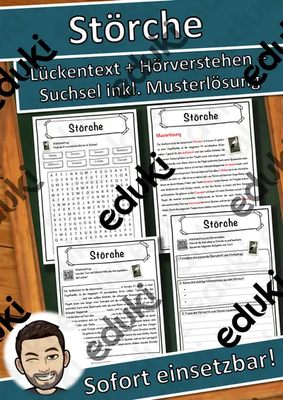
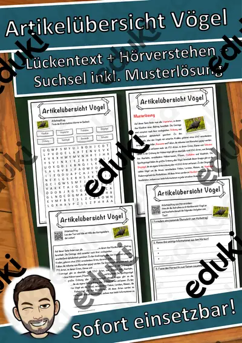
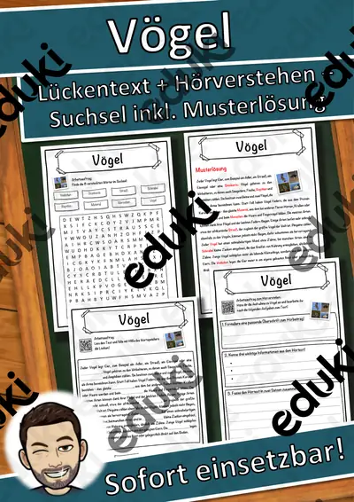
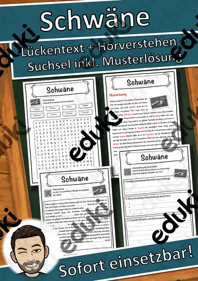
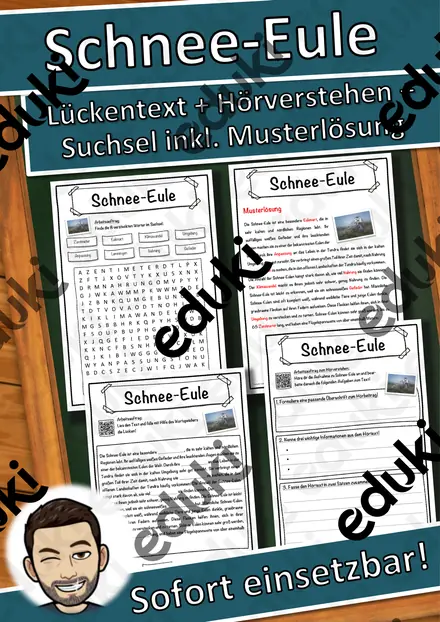
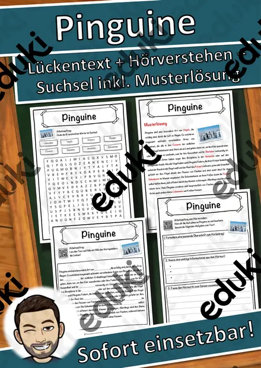
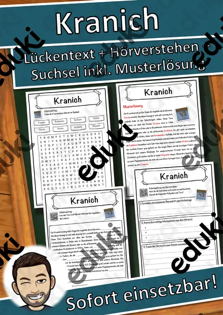

Vögel und Vogelzug: Arbeitsblätter für Klasse 1–6 (Sachunterricht)
Vögel lassen sich fast überall beobachten. Der Unterricht verbindet Artenkenntnis, Körperbau und Verhalten, vom Futterhaus im Winter bis zu Zugvögeln im Herbst.
Die Begriffsliste dieser Einheit: Federn und Flügel, Schnabelformen, Zugvögel, Nestbau, Standvögel und Vogelstimmen.
Je nach Bundesland variiert die genaue Einordnung; üblich ist das Fach Sachunterricht in den Klassen 1 bis 6. Die Kinder erkennen heimische Vögel und erklären, warum manche ziehen und andere bleiben.
Ob Vertretungsstunde, Stationenarbeit oder Hausaufgabe: Die Arbeitsblätter zu Vögel und Vogelzug lassen sich flexibel einsetzen, etwa mit Federn und Flügel als Auftakt und Vogelstimmen als Abschluss. Musterlösungen sparen die Korrekturzeit. Leistungsstarke und schwächere Lesende erhalten über die Lesespurgeschichten Texte in drei Stufen.
Die Auswahl zum Thema umfasst derzeit 29 Titel, zum Beispiel Klassentier-Paket Eule: Sachtext in 3 Stufen, Steckbriefe Vögel im Winter und Feriengrüße Eule: Tierbande Klassentier. Dazu zählen 2 Lesespurgeschichten, 1 Lesespaziergang und 21 Lückentexte mit Hörverstehen für Klasse 1–7. Fünf Minuten am Fenster mit einem einfachen Strichlistenbogen liefern ausreichend Daten für ein Klassenprotokoll.
Das gehört zum Thema
Passende Arbeitsblätter und Materialpakete

Klassentier-Paket Eule: Sachtext in 3 Stufen, Klassendienste, Lobkarten, Klasse 1–4

Steckbriefe Vögel im Winter – Materialpaket (10 heimische Wintervögel, differenziert, mit Lösungen)

Lesespaziergang Vögel am Futterhaus – 6-fach differenziert mit Bildkarten, Sternchenaufgaben und Audio (Klasse 1–4)

Der Specht – Lesespurgeschichte mit Rätselaufgaben (Klasse 5)

Der Vogel – Lesespurgeschichte mit Rätselaufgaben (Klasse 7)

Störche Lückentext mit Wortspeicher Hörverstehen und Suchsel
Spechte Lückentext mit Wortspeicher Hörverstehen und Suchsel
Strauß Lückentext mit Wortspeicher Hörverstehen und Suchsel

Artikelübersicht Vögel Lückentext mit Wortspeicher Hörverstehen und Suchsel

Vögel Lückentext mit Wortspeicher Hörverstehen und Suchsel

Schwäne Lückentext mit Wortspeicher Hörverstehen und Suchsel
Schwalben Lückentext mit Wortspeicher Hörverstehen und Suchsel

Schnee-Eule Lückentext mit Wortspeicher Hörverstehen und Suchsel

Pinguine Lückentext mit Wortspeicher Hörverstehen und Suchsel

Rotkehlchen Lückentext mit Wortspeicher Hörverstehen und Suchsel

Papageien Lückentext mit Wortspeicher Hörverstehen und Suchsel

Gänse Lückentext mit Wortspeicher Hörverstehen und Suchsel

Falken Lückentext mit Wortspeicher Hörverstehen und Suchsel

Eulen Lückentext mit Wortspeicher Hörverstehen und Suchsel

Möwen Lückentext mit Wortspeicher Hörverstehen und Suchsel

Kuckuck Lückentext mit Wortspeicher Hörverstehen und Suchsel

Kranich Lückentext mit Wortspeicher Hörverstehen und Suchsel

Kolibri Lückentext mit Wortspeicher Hörverstehen und Suchsel

Meisen Lückentext mit Wortspeicher Hörverstehen und Suchsel
Weitere 5 Materialien zum Thema im Material-Finder.
Häufige Fragen
Für welche Klassenstufe passen die Arbeitsblätter zu Vögel und Vogelzug?
Die 29 Materialien zu diesem Thema sind für Klasse 1–7 ausgelegt, die meisten davon für Klasse 6. Einzelne Titel lassen sich mit Anpassung auch eine Stufe darunter oder darüber einsetzen.
Welche Inhalte decken die Materialien zu Vögel und Vogelzug ab?
Inhaltlich reicht die Auswahl von Federn und Flügel über Schnabelformen und Zugvögel bis zu Standvögel; Details stehen bei den einzelnen Materialien.
Wie setze ich Vögel und Vogelzug im Unterricht ein?
Fünf Minuten am Fenster mit einem einfachen Strichlistenbogen liefern ausreichend Daten für ein Klassenprotokoll. Danach genügt meist ein Material als Einstieg und eines zum Üben.
Mehr Material nach Fach und Klasse
- Alle Materialien Biologie
- Arbeitsblätter Biologie Klasse 2
- Arbeitsblätter Biologie Klasse 3
- Arbeitsblätter Biologie Klasse 4
- Arbeitsblätter Biologie Klasse 5
- Arbeitsblätter Biologie Klasse 6
- Unterrichtsmaterial Klasse 1
- Unterrichtsmaterial Klasse 2
- Unterrichtsmaterial Klasse 3
- Unterrichtsmaterial Klasse 4
- Unterrichtsmaterial Klasse 5
- Unterrichtsmaterial Klasse 6
Verwandte Lehrplanthemen
- Schulanfang und Klassengemeinschaft (Sachunterricht, Klasse 1–4)
- Jahreszeiten (Sachunterricht, Klasse 1–4)
- Bauernhof und Nutztiere (Sachunterricht, Klasse 1–4)
- Berufe und Berufswahl (Sachunterricht, Klasse 1–10)
- Dinosaurier und Urzeit (Sachunterricht, Klasse 1–5)